Mario Adventure 3 brings a whole army of new power ups to the table! Returning to this avdventure:
| 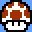 | Mushroom - This is Mario's base power up. Grabbing this will grow Mario and allow him to destroy bricks by jumping underneath them. |
| 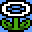 | Fire Flower - The classic "fire power". With this, Mario can throw fireballs at enemies and melt frozen blocks. |
| 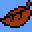 | Super Leaf - Returning from SMB3, Mario can use this to whack enemies with his tail by pressing the B button. In the air, pressing A will allow him to float to the ground. When your P-Meter is charged, jump up to begin flying. Pressing A repeatedly while flying will increase Mario's height. |
| 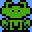 | Frog Suit - The under used suit from SMB3, this power up returns with an extra ability. Besides holding the A button in water to swim faster, Mario will be able to breathe under water with the Frog suit. |
Now for the brand new power ups:
| 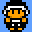 | Sledge - This power up is more powerful than the Hammer Bros. suit. Mario can use this to throw sledge hammers that break bricks and rocks and he can do a ground pound that stuns enemies on the ground. |
| 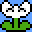 | Ice Flower - The opposite to the Fire Flower, Mario can use this to throw ice balls. Ice balls will freeze enemies into carryable ice blocks and freeze standing water to produce ice bridges. |
| 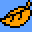 | Fox Leaf - This different kind of leaf will turn Mario into Fox Fire Mario. He cannot fly nor can he float, but he can use his tail to whack enemies and activate blocks. He can also charge his P-Meter simply by holding the B button. Once charged, holding a the d-pad in a direction and letting go will turn Mario into a fireball that charges in the direction held by the d-pad. As a fireball, Mario can break bricks and destroy enemies. If Mario touches water in fireball mode, he will be extinguished from it. |
| 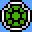 | Koopa Shell - Tapping into Koopa power, Mario can go into his own shell by holding the Down button will moving. In shell mode Mario can activate blocks, destroy bricks, harm enemies just as they were hit by a shell and brounc off of solid objects. |
| 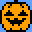 | Pumpkin - Mario will look and act like a Boo in this form. Pressing Up + B will turn Mario into a Boo himself, allowing him to freely go through solid objects momentarily. If he reforms inside of a wall, he will be hurt and possibly die! If he reforms near most enemies, they will be destroyed. |
| 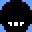 | Ninja Shroom - As a Ninja, Mario can throw shurikens in 7 directions (all but straight down). When in the air and next to a wall, pressing the d-pad in the direction of the wall will make Mario begin to slide against the wall at a slower pace. If you press the A Button will sliding on a wall, Mario will wall jump off the wall. |
Mario Adventure 3 plays significantly different from previous Super Mario Bros. 3 hacks. Rather than traversing the levels from start to finish, the levels act as points between two maps. Note the World 1 map:
The map has several new features besides the pipe mechanic. Some of these are one-time completions, others can be revisted.
| 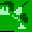 | Invincibility Brothers Toll - These Invincibility Brothers are using the power of the Starman to guard routes on the map. In order to pass by you must collect the Hammer Bros. coins found in the levels. Landing on an Invicibility Brother will take you to a dialogue. If you have enough Hammer Bros. coins, you will pay the toll and you can free pass the route for the rest of the game. If you lack the toll, you will exit back to the map. |
| 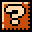 | Challenge Levels - Challenge levels are complete once levels that involve a different set of rules. Each challenge level has a unique game play gimmick that makes it tough to complete. If you do complete it, however, you will gain rewards in coins and experience. |
| 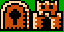 | Fortress & Lock - Some paths are guarded by a lock and fortress combination. In order to remove the lock, you must complete the Fortress stage. The fortress can be rentered but the lock only needs to be removed once. |
| 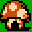 | Item Shops - Item shops contain much needed items to complete your adventure. Shops are located through out the entire game and all contain the same items. More items become available to purchase as you make your way further into the game. |
Mario Adventure 3 contains two status bars with one displaying at a time. To change status bar displays, simply press [SELECT].
| 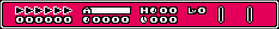 | Status Bar 1 - This status bar contains critical information about the current status of the player. |
| 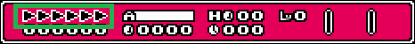 | Power Meter - Shows the p-meter level. |
| 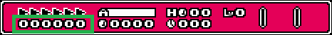 | Experience Points - This shows the number of experience points you've earned in the game. |
| 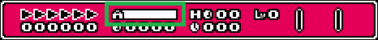 | Air Meter - How much air you have remaining. |
| 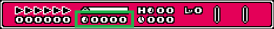 | Coins - The number of coins you currently have. |
| 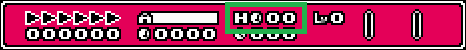 | Hammer Bros. Coins - The number of Hammer Bros. you currently have. |
| 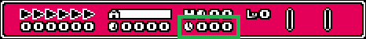 | Level Timer - The time remaining for this level. |
| 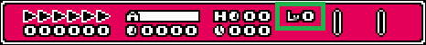 | Experience Level - Current level of the player. |
| 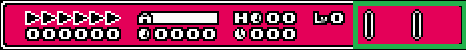 | Equipped Item & Current Ability - Displays the currently equipped item and enabled ability. |
| Status Bar 2 - This status bar contains noncrucial data about the current game entirely. | |
|
|
Game Coins - Shows the number of coins collected through out the entire game. |
|
|
Odometer - This shows the amount of distance traveled. Roughly 96 pixels is one tick on the odometer. |
|
|
Game Timer - Total time spent in the game. |
|
|
World Name - Current world's name. |
Mario Adventure 3 adds small RPG element of experience points. Killing enemies nets one experience point. Bopping enemies without touching the ground in succession will gradually increase the amount of experience earned as a chain. For example: bopping on two Goombas without touching the ground will net 1 point and then 2 points for a total of 3 points. Chains will be maxed out at 9 total. Defeating bosses will gain more experience. Finally, collecting cherries found in the game will increase experience points as well.
As you gain more experience, you will eventually begin to "level up". Leveling up grants Mario new abilities that he can use in the game. With each level increased, Mario gains one new ability. Abilities can be used one at a time and affect the player beneficially in some way.
| Damage Shield - When hit as anything above Super Mario, this ability will prevent Mario from directly shrinking. | |
| Power Upgrade - No Mushrooms allowed! All blocks containing power ups will produce the upgraded power up and allow Mario to skip Super Mario status. | |
| Double Air Time - Increases the amount of air Mario has two fold. | |
| Sure Footing - Prevents Mario from slipping on ice blocks. | |
| Kuribo's Shoes - Allows Mario to bop enemies normally unstompable and to walk on spikey surfaces. | |
| Fast P-Meter - Causes the P-Meter to increase at twice the speed. Does not apply to Fire Fox Mario. | |
| Item Reserve - Allows Mario to store an item in reserve and use it during the game. Pressing [SELECT] will generate the item onto the playing field. If Mario has an item in reserve and this ability is not currently active, the item cannot be retrieved. | |
| Grave Robber - All enemies defeated will net Mario an extra coin. | |
| Jump Higher - Allows Mario to jump higher than normal. |
Mario Adventure 3 uses an air meter. Going under water will cause the air meter to slowly deplete. If the air meter is emptied, Mario will immediately die! Some enemies can also deplete air as well as other environment risks such as poisonous air.
Coins are used to purchase items in the Item Shops. You can hold a maximum of 9999 coins at a time. If you reach this max, your game coins counter (in status bar mode 2) will continue to increase.
Every level contains a single Hammer Bros. coin hidden. These coins can only be collected once and are used to pay tolls at Invincible Bros. crossings. When you pay a toll, your coins will be deducted so spend wisely!
Item Shops are Mushroom Houses on the map screen. When you enter one, a short dialogue will appear and you will be able to shop. Pressing [LEFT] and [RIGHT] will scroll through the available items with their prices displayed below them. Attempting to purchase an item with insufficient funds will play an "error" sound. Purchasing an item will deduct your coins immediately. The Item Shop's item available will change through out the game and sometimes special discounts can be found at the right time!
The weather effects of Mario Adventure 3 are not randomized like in the first game. However, with rain or snow, there may be be wind involved that can push Mario left or right. The strength of the wind will vary.
| Dry Piranha Plant - This bony plant is invulnerable to fire and tail whacks but is just as vicious as its leafy counter part! | |
| Dry Venus Fire Trap - This bony plant is invulnerable to fire and tail whacks but is just as vicious as its leafy counter part! | |
| Bullies - These are no push overs. Bullies will bump Mario backwards and charge after him for an even more forcefull bump! These guys can only be defeated with a Starman. Beware of nearby pits! | |
| Ice Bros. - These cold hearted Brothers love to spit ice balls! If hit by an ice ball, Mario will become frozen and unable to move. Pressing [A] repeatedly will shake Mario out of his frozen state unharmed. | |
| Invincible Enemies - Bowser has given some enemies the power of the Starman! These enemies will rotate their colors in a rainbow pattern and cannot be defeated. |
Mario Aventure 3 has several new types of blocks to deal with.
| Cherries - Coming from SMB2, these juicy fruits will add 1 experience point. | |
| Ice Blocks - These cold blocks of ice can be found in any level and are super slick. Fire Mario can melt these away for better traction. | |
| Frozen Coins - Just as slick as ice blocks, thawing these with fireballs will reveal a coin to collect. | |
| Frozen Water - Found on top of cold bodies of water, these can be melted to allow access to underwater surprises. | |
| Hollow Blocks - These blocks are normally hollow until a P-Switch is activated. Once activated, these blocks become solid, usually leading to a secret. | |
| E-Blocks - E-Blocks are colored blocks that become solid based on the color of the last E-switch hit. Found exclusively in fortress levels. | |
| E-Switches E-Switches will activate the corresponding color E-Blocks and deactivate other colored E-Blocks. Any previous hit E-Switch will pop back after another color is hit. | |